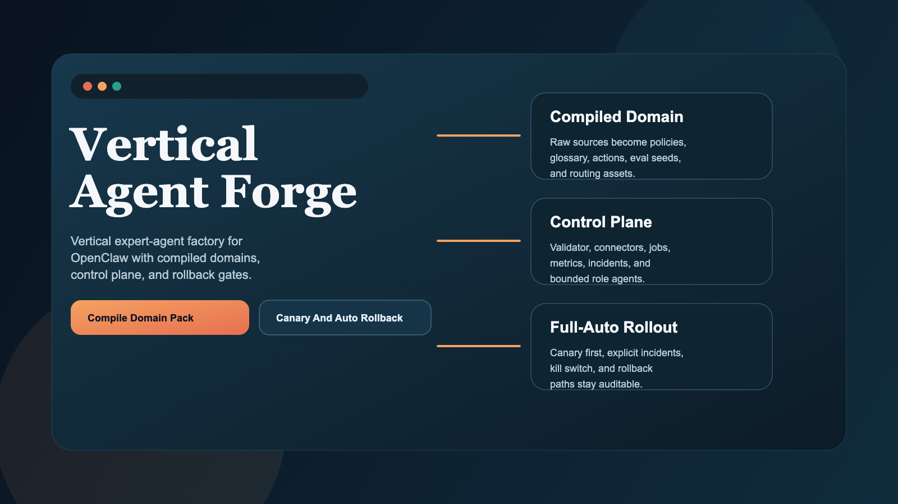
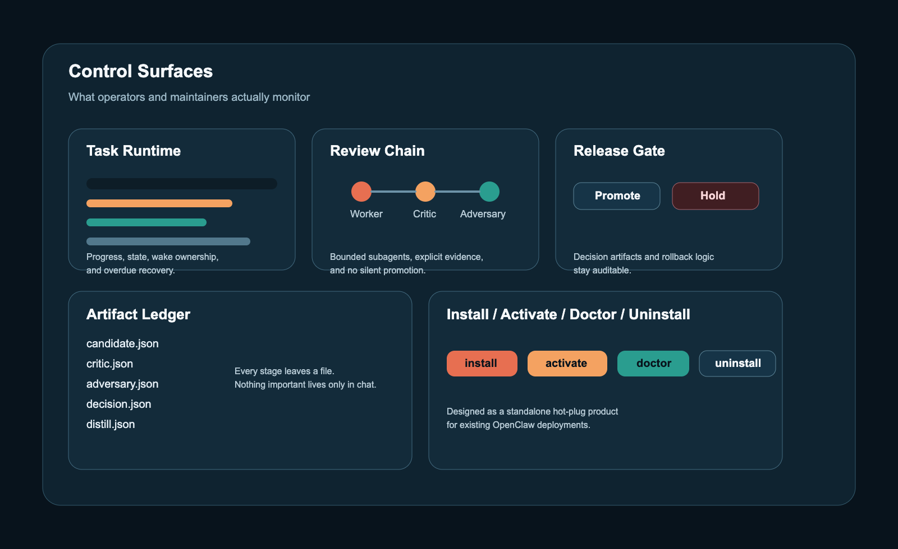

角色清晰
把用户交付和质量控制拆开，不让一个 agent 同时承担两种责任。
app-main面向用户app-forge编排改进- 子 agent 保持有边界、可追责
OpenClaw 生产级工具包
Vertical Agent Forge 为 OpenClaw 增加一个 durable improvement loop： 多角色 agent、release gate、artifact 合同，以及热插拔安装方式。
把用户交付和质量控制拆开，不让一个 agent 同时承担两种责任。
app-main 面向用户app-forge 编排改进
直接复用 OpenClaw 现有 runtime：task、
continuous-worker、wake、subagent。
每个改动都要经过 proposal、critique、adversarial review 和 promotion。
对比
流程
视觉化文档


Examples
账单策略、升级降级、退款和 plan eligibility。
node ./bin/vertical-agent-forge.mjs init --domain saas-supportshortlist-first 旅行推荐与路线 tradeoff。
node ./bin/vertical-agent-forge.mjs init --domain travel-concierge证据整理、研究分诊与内部分析流程。
node ./bin/vertical-agent-forge.mjs init --domain research-opsCLI 生命周期
node ./bin/vertical-agent-forge.mjs installnode ./bin/vertical-agent-forge.mjs activatenode ./bin/vertical-agent-forge.mjs init --domain saas-supportnode ./bin/vertical-agent-forge.mjs upgradenode ./bin/vertical-agent-forge.mjs doctornode ./bin/vertical-agent-forge.mjs uninstallPricing
MIT 协议开源产品仓库与 release 资产。
模型、存储和基础设施成本来自你自己的部署。
Contact